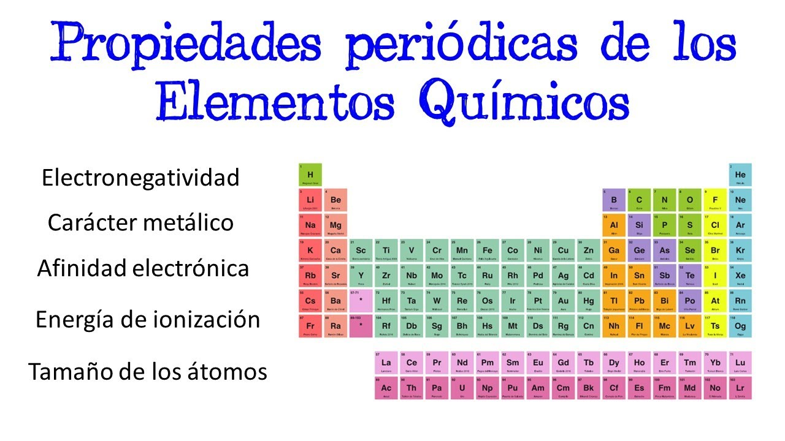

Las propiedades periódicas de los elementos químicos son las características de los elementos que están relacionadas por su ubicación en la tabla periódica de acuerdo a su número atómico, conociendo sus valores tu puedes conocer sus propiedades o comportamiento químico de los elementos químicos y se denominan periódicas porque se repiten secuencialmente o de modo regular en la Tabla periódica cada número determinado de elementos. Las propiedades periódicas son:
Electronegatividad: es la capacidad o fuerza que un átomo tiene para atraer hacia si los electrones de un enlace químico. Fue propuesta por Linus Pauling en 1932, teniendo el valor más alto el átomo de Flúor (F) de 4.0 y el valor más bajo para el Francio (Fr) de 0.7. Los átomos que tienen mayor atracción por los electrones están ubicados en la esquina superior derecha (no metales) de la tabla periódica, tienden a formar iones negativos, la electronegatividad se usa para determinar si los enlaces que unen a los átomos de una sustancia es iónico o covalente, por ejemplo en la sal común NaCl el enlace que une a los átomos es iónico, porque el cloro tiene un valor de electronegatividad de 3 porque es el átomo que atrae el electrón del enlace, quedando cargado negativamente Cl- y el sodio pierde su electrón quedando cargado positivamente Na+, en el ejemplo del oxígeno O2 los dos átomos tienen el mismo valor de electronegatividad 3.5, teniendo la misma fuerza es por eso que ellos comparten sus electrones del enlace químico para completar su octeto por lo que el tipo de enlace es covalente no polar, en el ejemplo del ácido Fluorhídrico HF, el flúor es el que atrae los electrones del enlace químico estando más cerca de él y generando una nube electrónica de mayor volumen, teniendo un enlace químico de tipo covalente polar.

Antecedentes históricos
A principios del siglo XIX la cantidad de elementos conocidos, y sus compuestos, ya era lo
suficientemente grande como para requerir algún tipo de clasificación que facilitara a los químicos
su estudio y la comprensión de sus propiedades.
Como desde el principio se comprobó la existencia de familias de elementos que presentaban
muchas semejanzas entre sí, se intuyó que debía de existir una ley natural que los relacionase y
agrupase. La búsqueda de esta ley natural está plagada de numerosos intentos, basados, por lo
general, en dos criterios fundamentales:
La semejanza de las propiedades físicas y químicas de los elementos y sus compuestos.
• La relación que estas propiedades pudieran tener con alguna característica de los átomos,
principalmente con la masa atómica.
Las tríadas de Döbereiner en 1817, el tornillo telúrico de Charcourtois en 1862 y las octavas de
Newlands en 1866 son algunos de los intentos que, por su originalidad o éxito, merecen un
especial reconocimiento.